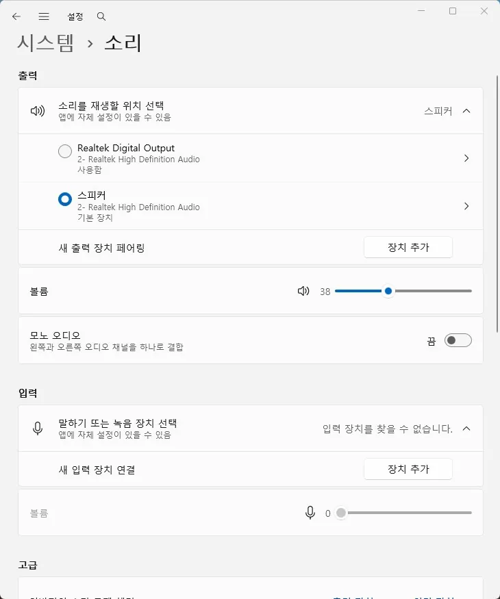

오디오
소리가 나오지 않음 원인과 점검 순서
스피커나 이어폰에서 소리가 나오지 않는 경우
소리 문제는 스피커가 고장난 것처럼 보여도 실제로는 출력 장치 선택이 바뀌었거나 드라이버가 꼬인 경우가 많습니다. 이어폰과 스피커, HDMI 오디오가 서로 바뀌어 들어가면 소리가 사라진 것처럼 느껴질 수 있습니다.
오디오가 아예 안 들리는지, 특정 앱에서만 안 들리는지도 구분해야 합니다. 앱 문제와 시스템 문제는 점검 순서가 다릅니다.
설정 화면에서 보이는 출력 장치와 실제 연결된 장치를 맞춰 보는 것이 첫걸음입니다.
이 가이드가 필요한 상황
- 볼륨은 켜져 있는데 소리만 없다.
- 이어폰을 꽂으면 장치가 바뀐다.
- 앱마다 들리거나 안 들리는 패턴이 다르다.
먼저 확인할 항목
- 출력 장치 확인 — 기본 출력이 바뀌면 소리가 사라진 것처럼 보입니다. 스피커, 이어폰, 모니터 오디오 중 무엇이 선택됐는지 확인하세요. 설정 → 시스템 → 소리에서 현재 선택된 출력 장치와 볼륨을 확인할 수 있습니다.

- 오디오 드라이버 점검 — 장치가 잡히지 않으면 드라이버 문제일 수 있습니다. 제조사 드라이버로 다시 설치해 보세요.
- 포트와 앱별 재현 확인 — 헤드폰 단자나 특정 앱만 문제인지 나누면 원인이 좁혀집니다. 다른 포트와 다른 앱에서 소리를 시험해 보세요.
원인을 더 정확히 나누는 방법
장치는 보이는데 소리만 없을 때
출력 장치가 보인다고 끝이 아닙니다. 음소거, 앱 볼륨, 향상 기능 충돌이 함께 있으면 실제로는 아무 소리도 안 날 수 있습니다.
확인 결과에 따른 다음 단계
- 장치가 자꾸 바뀔 때 — 기본 출력 장치 설정과 연결 포트를 다시 맞추세요.
- 특정 앱만 안 들릴 때 — 시스템 전체보다 앱별 볼륨과 오디오 출력 지정 문제를 먼저 확인해야 합니다.
피해야 할 실수
- 볼륨 아이콘만 보고 끝내는 것
- 출력 장치가 바뀐 사실을 놓치는 것
자주 묻는 질문
- 이어폰을 꽂았는데도 소리가 안 납니다. 기본 출력 장치와 장치 인식 상태를 먼저 확인하고, 다른 포트로도 시험해 보세요.
내장 사운드 자체 고장이 의심되면 USB 외장 사운드카드로 우회하는 방법도 있습니다.
이 포스팅은 쿠팡 파트너스 활동의 일환으로, 이에 따른 일정액의 수수료를 제공받습니다.
이 증상과 함께 나타나는 오류 코드
최종 검토일: 2026-07-14